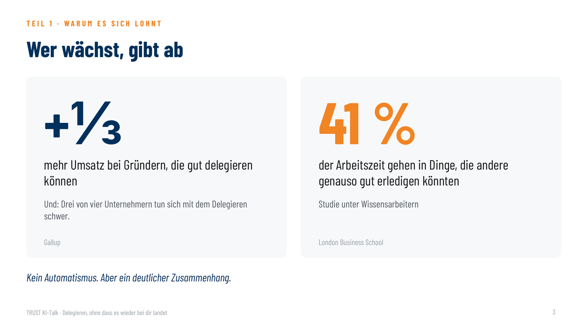
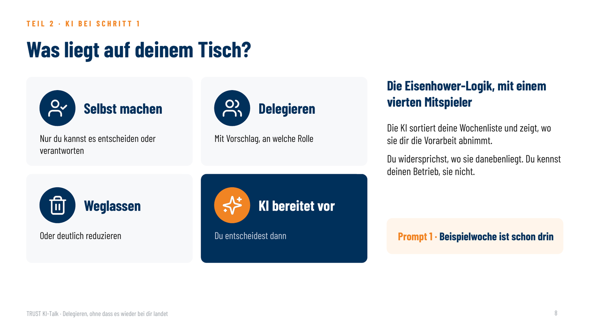
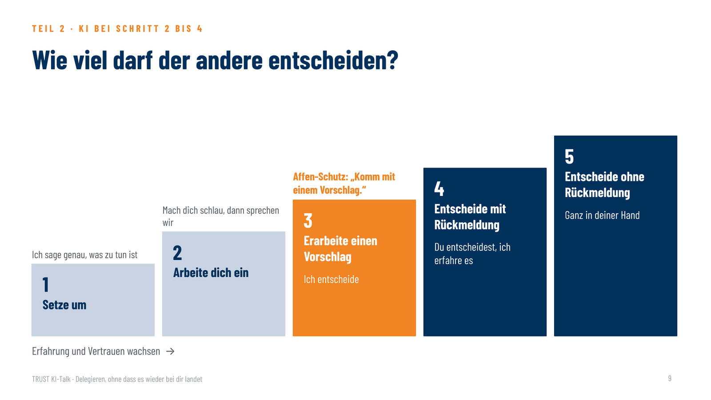
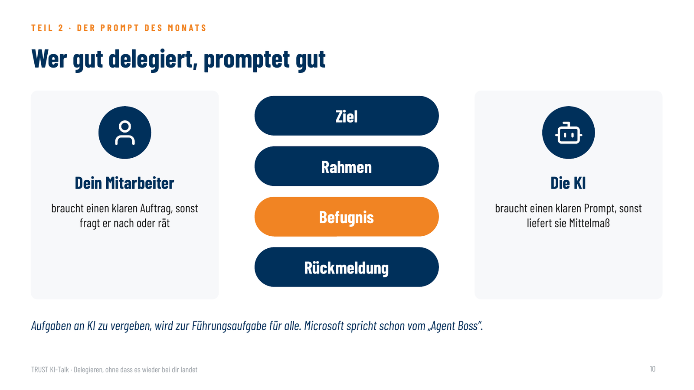
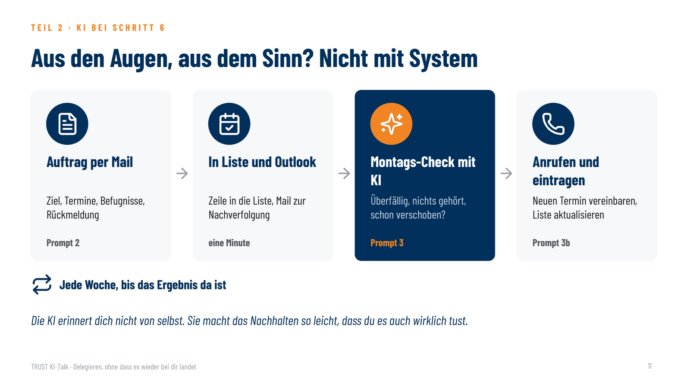

So läuft die Stunde: eine Führungsaufgabe · drei Prompts zum Mitmachen · deine Fragen.
So machst du mit: Öffne in deinem KI-Werkzeug einen neuen Chat. Alle Prompts von heute schickst du nacheinander in diesem einen Chat ab. Wer kein KI-Werkzeug hat, schaut einfach zu.
Bevor du etwas in ein KI-Werkzeug eingibst: Rollen statt Namen („meine Teamleiterin Vertrieb“, nicht „Frau Müller“). Keine vertraulichen Details, keine Kundendaten. Wenn dein Betrieb ein KI-Werkzeug freigegeben hat, nimm das.
Warum es sich lohnt

Wer gut delegiert, wächst stärker: Gründer schnell wachsender Unternehmen, die gut delegieren, erzielen rund ein Drittel mehr Umsatz. Und Wissensarbeiter verbringen rund 41 % ihrer Zeit mit Dingen, die andere genauso gut erledigen könnten.
Wer wächst, gibt ab. Kein Automatismus, aber ein deutlicher Zusammenhang.
1Der Affe auf der Schulter
Ein Mitarbeiter spricht dich auf dem Flur an: „Chef, wir haben da ein Problem.“ Du sagst: „Lass mich mal drüber nachdenken, ich melde mich.“ In diesem Moment ist der Affe auf deine Schulter gesprungen. Das Problem gehörte dem Mitarbeiter, jetzt gehört es dir. Und jetzt wartet er auf dich.
Die Gegenfrage, die den Affen beim Mitarbeiter lässt: „Was schlägst du vor?“ Oder: „Komm morgen mit zwei Lösungsvorschlägen, dann entscheiden wir.“
Nach dem Klassiker „Who’s Got the Monkey?“ von William Oncken und Donald Wass, Harvard Business Review.
Wie viele Affen sitzen gerade auf deiner Schulter? Schätz mal eine Zahl und schreib sie in den Chat.
Der Affe bleibt beim Mitarbeiter.
2Die fünf häufigsten Fehler
| Fehler | Was passiert | Was hilft |
|---|---|---|
| Mangelnde Kommunikation | Aufgabe nur zwischen Tür und Angel besprochen | Übergabegespräch, Nachfragen zulassen |
| Unklare Erwartungen | Der Mitarbeiter weiß nicht, was am Ende rauskommen soll | Ergebnis und Termin festlegen |
| Rückdelegation | Bei Überforderung oder weil es bequemer ist, kommt die Aufgabe unfertig zurück | Der Affe bleibt beim Mitarbeiter |
| Zu wenig Kontrolle | Die Aufgabe gerät in Vergessenheit, keiner meldet sich, keiner fragt nach | Kontrollpunkte vorher vereinbaren und nachhalten · mehr dazu in Punkt 7 und 8 |
| Fehlende Vertrauensbasis | Kontrolle wird als Misstrauen erlebt, oder der Chef macht es lieber selbst | Das Ergebnis prüfen, nicht jeden Handgriff |
Gut zu wissen: Führungskräfte bewerten dieselbe Arbeit besser, wenn sie selbst stärker daran beteiligt waren. Das Gefühl „bei mir wird’s besser“ ist also zum Teil eine Wahrnehmungstäuschung.
Fast alle fünf Fehler haben dieselbe Ursache: Der Auftrag war nicht durchdacht, und keiner hat nachgehalten.
Ein guter Auftrag kostet 15 bis 20 Minuten Nachdenken. Die hat man im Tagesgeschäft nicht. Genau diese Denkarbeit nimmt dir die KI heute zu großen Teilen ab.
3Die 7 Schritte guten Delegierens
- Aufgaben identifizieren. Was kann ich abgeben? KI hilft · Punkt 4
- Den richtigen Mitarbeiter auswählen. Wer kann es, wer soll daran wachsen? KI hilft · Punkt 6
- Ziele und Erwartungen definieren. Was soll rauskommen, bis wann? KI hilft · Punkt 6
- Klare Anweisungen formulieren. Präzise statt vage, mit Befugnissen. KI hilft · Punkt 6
- Unterstützung anbieten. Befähigen, nicht allein lassen.
- Regelmäßige Kontrolle einbauen. Kontrollpunkte vereinbaren und nachhalten. KI hilft · Punkt 7 und 8
- Feedback nutzen. Anerkennen, Verbesserung benennen.
Unterstützung und Anerkennung gibt ein Mensch. Bei den anderen fünf Schritten nimmt dir die KI die Vorarbeit ab.
4Prompt 1: Die Wochenliste

Was liegt auf deinem Tisch, das dort nicht hingehört? Die KI sortiert deine Aufgaben in vier Gruppen und zeigt bei jeder, wo sie dir die Vorarbeit abnimmt. Zum Ausprobieren ist eine Beispielwoche schon eingefügt: kopieren, einfügen, abschicken.
Orange markiert = Beispiel. Für dich ersetzt du diese Stellen durch deine eigenen Angaben.
Ich bin Geschäftsführer in einem mittelständischen Betrieb mit rund 45 Mitarbeitern. Unten steht alles, was diese Woche auf meinem Tisch liegt. Sortiere die Aufgaben in vier Gruppen: 1. Selbst machen – weil nur ich es entscheiden oder verantworten kann 2. Delegieren – mit Vorschlag, an welche Rolle 3. Weglassen oder deutlich reduzieren 4. KI bereitet vor – ich entscheide dann Sei kritisch: Wenn ich mir bei Gruppe 1 etwas vormache, sag es mir. Antworte kompakt: - Eine einzige Tabelle mit den Spalten: Gruppe | Aufgabe | Wer macht es | KI-Vorarbeit - In der Spalte Gruppe jeweils Nummer und Kurzname, z. B. „2 · Delegieren“ - Sortiert nach Gruppe 1 bis 4 - Spalte „KI-Vorarbeit“: in jeder Zeile prüfen, was die KI vorbereiten kann, höchstens 8 Wörter; wenn nichts Sinnvolles, ein Strich - Spalte „Wer macht es“: Rolle, höchstens 6 Wörter - Schließe in jedem Fall mit genau einem Satz unter der Tabelle: dein wichtigster kritischer Hinweis an mich - Keine Einleitung, keine weiteren Abschnitte Meine Aufgaben (Beispielwoche – ersetze sie durch deine eigene Liste): - Angebot Großkunde prüfen und freigeben (Volumen ca. 180.000 €) - Urlaubsplanung Weihnachten abstimmen (Produktion, 3 Schichten) - Messeauftritt März: erste Ideen sammeln - Rechnungen freigeben (ca. 40 pro Woche, auch Kleinbeträge) - Bewerbungsgespräch Vertriebsinnendienst - Monatszahlen September kommentieren - Beschwerde Kunde X beantworten (Lieferverzug, langjähriger Kunde) - Lieferantengespräch Preiserhöhung vorbereiten - Protokoll Teamleiter-Runde schreiben - Website-Text Karriereseite prüfen - Jahresgespräche planen (12 Mitarbeiter direkt) - Rückruf Steuerberater - Social-Media-Beitrag Firmenjubiläum
Tipp: Widersprich der KI, wo sie danebenliegt. Du kennst deinen Betrieb, sie nicht. Jedes Ergebnis fällt etwas anders aus, das ist normal.
Weglassen heißt: von deinem Tisch, nicht aus dem Betrieb.
Selbst bei den Aufgaben, die du behältst, nimmt dir die KI die Vorarbeit ab.
→ Jetzt weißt du, was du abgeben kannst. Aber wie, ohne dass der Affe zurückspringt? Punkt 5
5Die fünf Delegationsstufen
Wie viel darf der andere selbst entscheiden? Wer die Stufe nicht nennt, bekommt entweder Rückfragen zu allem, oder es wird etwas entschieden, was du selbst entscheiden wolltest.

Als Text anzeigen
- 1 · Setze um. Ich sage genau, was zu tun ist.
- 2 · Arbeite dich ein. Mach dich schlau, dann sprechen wir.
- 3 · Erarbeite einen Vorschlag. Ich entscheide.
- 4 · Entscheide und gib mir Rückmeldung.
- 5 · Entscheide ohne Rückmeldung.
Welche Stufe passt, hängt davon ab, wie erfahren jemand mit genau dieser Art Aufgabe ist. Stufe 3 ist der Affen-Schutz: „Komm mit einem Vorschlag“ lässt die Aufgabe beim Mitarbeiter.
Wer die Stufe nicht nennt, bekommt Rückfragen zu allem oder Entscheidungen, die er selbst treffen wollte.
6Prompt 2: Der Delegationsauftrag
Aus deinen Stichworten wird ein Auftrag, der nicht wieder bei dir landet. Erst stellt dir die KI die fünf Fragen, die dein Mitarbeiter stellen würde. Die Rückfragen sind die eigentliche Erkenntnis. Dann schreibt sie die E-Mail mit Ziel, Terminen, Befugnissen, Ressourcen und Rückmeldung, dazu die Zeile für deine Delegationsliste. Als Beispiel nehmen wir die Urlaubsplanung aus der Wochenliste.
Orange markiert = Beispiel. Für dich ersetzt du diese Stellen durch deine eigenen Angaben.
Ich möchte eine Aufgabe an meinen Schichtleiter Produktion übergeben. Erfahrung dieser Person mit so einer Aufgabe: etwas Erfahrung Anrede im Betrieb: Du Meine Stichworte (Beispiel – ersetze sie durch deine eigene Aufgabe): Urlaubsplanung Weihnachten und zwischen den Jahren für die Produktion, 3 Schichten. Viele wollen frei, aber wir haben eine Lieferzusage für einen Großkunden in KW 52. Plan soll bis 15. Oktober stehen, damit alle früh Bescheid wissen. Resturlaub aus diesem Jahr berücksichtigen. Hilf mir, daraus einen Auftrag zu machen, der nicht wieder bei mir landet. Geh in zwei Schritten vor. Schritt 1: Antworte in einer einzigen Nachricht mit genau drei Teilen: - Die fünf Fragen, die die Person mir wahrscheinlich stellen würde, als nummerierte Liste. Keine Auswahlfelder, keine Antwortvorschläge, keine Rückfragen nacheinander. - In einem Satz: An welcher Stelle würde die Aufgabe am ehesten wieder bei mir landen? - In einem Satz: Welche Delegationsstufe schlägst du vor (Setze um · Arbeite dich ein · Erarbeite einen Vorschlag · Entscheide mit Rückmeldung · Entscheide ohne Rückmeldung)? Dann hör auf und warte auf meine Antworten. Schritt 2: Schreib den Auftrag als kurze E-Mail an die Person, klar und freundlich, ohne Floskeln. Höchstens 150 Wörter. Je Punkt eine Zwischenüberschrift und höchstens zwei kurze Sätze oder Stichpunkte: - Ziel: Was soll am Ende herauskommen, woran erkennen wir, dass es gut ist? - Termin: Endtermin und Zwischentermine, als Stichpunkte mit Datum - Befugnisse: Was entscheidet die Person selbst, was stimmen wir ab? - Ressourcen: Budget, Zeit, Ansprechpartner, Unterlagen - Rückmeldung: Wann meldet sich die Person unaufgefordert, und mit was? Schließe mit einem Satz: dem Angebot, kurz darüber zu sprechen. Setze unter die E-Mail eine Tabelle mit genau einer Zeile für meine Delegationsliste, Spalten: Aufgabe | Rolle | Stufe | Endtermin | nächster Kontrollpunkt | letzter Stand. In „letzter Stand“ steht: Auftrag übergeben
Weiter zur E-Mail: zwei Wege
Im selben Chat direkt nach Prompt 2 abschicken. Die KI beantwortet ihre Fragen selbst, damit wir heute nicht tippen müssen.
Beantworte die Rückfragen selbst mit plausiblen Annahmen für einen mittelständischen Produktionsbetrieb und markiere jede Annahme mit [Annahme]. Dann mach mit Schritt 2 weiter.
Im Alltag beantwortest du die Fragen selbst, in Stichworten, zwei Minuten. Genau das ist die Denkarbeit, die vorher 20 Minuten gedauert hat.
Hier meine Antworten auf deine Fragen: 1. [deine Antwort] 2. [deine Antwort] 3. [deine Antwort] 4. [deine Antwort] 5. [deine Antwort] Wo ich keine Antwort gegeben habe, triff eine sinnvolle Annahme und markiere sie mit [Annahme]. Dann mach mit Schritt 2 weiter.

Wer gut delegiert, promptet gut. Und umgekehrt.
Tipp: Die E-Mail ersetzt nicht das Gespräch, sie ist die Grundlage dafür. Schick sie ab und ruf kurz an oder geh hin. Prüf vorher die markierten Annahmen und die Termine. Den Namen setzt du erst in Outlook ein, nicht in der KI.
7Die Delegationsliste
Aus den Augen, aus dem Sinn: Genau so verlaufen delegierte Aufgaben im Sande. Die KI erinnert dich nicht von selbst. Das System dahinter ist eine schlichte Liste in Excel, und ein fester Termin pro Woche.

So entsteht deine Delegationsliste
- Einmal anlegen: eine Excel-Tabelle mit sechs Spalten. Die Vorlage unten kopierst du mit einem Klick.
- Nach jedem Auftrag: die Tabellenzeile unter der E-Mail aus Prompt 2 kopieren und in deine Liste einfügen. Zehn Sekunden.
- Als Wecker: die Auftrags-Mail in Outlook unter „Gesendete Elemente“ zur Nachverfolgung kennzeichnen, mit Erinnerung am Kontrollpunkt.
- Jeden Montag: die ganze Liste kopieren und mit Prompt 3 prüfen lassen (Punkt 8).
Eine Aufgabe, eine Zeile
Wenn sich etwas tut, schreibst du die Zeile fort, statt eine neue anzulegen:
| Spalte | Was passiert |
|---|---|
| Aufgabe, Rolle, Stufe | bleiben, außer du senkst die Stufe oder vergibst neu |
| Endtermin | überschreiben, wenn ein neuer Endtermin vereinbart ist |
| Nächster Kontrollpunkt | mit dem neuen Datum überschreiben |
| Letzter Stand | mit Datum und Vereinbarung überschreiben, z. B. „12.10.: Entwurf liegt vor“ |
Ausnahme: Wurde ein Termin verschoben, schreib „verschoben auf …“ dazu und lass die bisherigen Verschiebungen stehen. Nur so erkennst du (und die KI), wer schon einmal vertröstet hat. Erledigt? Zeile löschen oder auf ein zweites Tabellenblatt „Erledigt“ verschieben.
Vorlage mit Beispiel
| Aufgabe | Rolle | Stufe | Endtermin | Nächster Kontrollpunkt | Letzter Stand |
|---|---|---|---|---|---|
| Kundenbefragung Top-30 aufsetzen | Teamleiterin Vertrieb | Erarbeite einen Vorschlag | 30.10. | 12.10. | 05.10.: Fragebogen-Entwurf angekündigt |
| Angebote Messestand einholen | Assistenz Geschäftsführung | Arbeite dich ein | 23.10. | 02.10. | 18.09.: Auftrag übergeben, seitdem nichts gehört |
| Urlaubsplanung Weihnachten | Schichtleiter Produktion | Entscheide mit Rückmeldung | 15.10. | 13.10. | 09.10.: Auftrag per Mail übergeben |
| Einarbeitungsplan neuer Mitarbeiter | Teamleiter Lager | Erarbeite einen Vorschlag | 31.10. | 19.10. | 06.10.: Gliederung liegt vor |
| Lieferantenvergleich Verpackung | Einkauf | Erarbeite einen Vorschlag | 02.10. | 02.10. | 15.09.: „ich kümmere mich“; 25.09.: verschoben auf 02.10.; seitdem nichts |
| Karriereseite überarbeiten | Marketing | Entscheide mit Rückmeldung | 06.11. | 16.10. | 07.10.: erste Texte in Arbeit |
8Prompt 3: Der Montags-Check
Einmal pro Woche, fünf Minuten: Was ist überfällig, wo hast du nichts gehört, wer hat schon einmal verschoben? Und wie fragst du nach, ohne dass es nach Misstrauen klingt? Zum Ausprobieren ist die Beispielliste von oben schon eingefügt, mit der Urlaubsplanung aus Prompt 2. Für dich ersetzt du die markierten Stellen durch deine eigene Liste und das heutige Datum.
Orange markiert = Beispiel. Für dich ersetzt du diese Stellen durch deine eigenen Angaben.
Unten steht meine Liste delegierter Aufgaben. Heute ist Freitag, der 9. Oktober 2026. Antworte kompakt, ohne Einleitung. Nenne bei jeder Aufgabe die Rolle. 1. Überfällig, weil Endtermin oder Kontrollpunkt überschritten: eine Zeile je Aufgabe, mit was und wie lange schon 2. Kontrollpunkt in den nächsten 7 Tagen: eine Zeile je Aufgabe 3. Seit über zwei Wochen nichts gehört: eine Zeile je Aufgabe 4. Für jede Aufgabe aus 1 und 3 ein kurzer Leitfaden für einen Anruf, Du-Form: - Einstieg: ein Satz, freundlich und ohne Vorwurf - Frage: eine konkrete Frage zu genau dieser Aufgabe - Vereinbarung: was genau ich bis wann am Ende des Gesprächs zugesagt haben will - Bestätigung: zwei Sätze, die ich nach dem Anruf per Mail schicke 5. Wurde eine Aufgabe schon einmal verschoben? Dann empfiehl in einem Satz den nächsten Schritt: enger begleiten, Delegationsstufe senken oder neu vergeben. 6. Ein Satz: Welche Aufgabe droht gerade zu mir zurückzukommen, und warum? Meine Liste (Beispiel – ersetze sie durch deine eigene Liste und das heutige Datum): Aufgabe | Rolle | Stufe | Endtermin | nächster Kontrollpunkt | letzter Stand Kundenbefragung Top-30 aufsetzen | Teamleiterin Vertrieb | Erarbeite einen Vorschlag | 30.10. | 12.10. | 05.10.: Fragebogen-Entwurf angekündigt Angebote Messestand einholen | Assistenz Geschäftsführung | Arbeite dich ein | 23.10. | 02.10. | 18.09.: Auftrag übergeben, seitdem nichts gehört Urlaubsplanung Weihnachten | Schichtleiter Produktion | Entscheide mit Rückmeldung | 15.10. | 13.10. | 09.10.: Auftrag per Mail übergeben Einarbeitungsplan neuer Mitarbeiter | Teamleiter Lager | Erarbeite einen Vorschlag | 31.10. | 19.10. | 06.10.: Gliederung liegt vor Lieferantenvergleich Verpackung | Einkauf | Erarbeite einen Vorschlag | 02.10. | 02.10. | 15.09.: „ich kümmere mich“; 25.09.: verschoben auf 02.10.; seitdem nichts Karriereseite überarbeiten | Marketing | Entscheide mit Rückmeldung | 06.11. | 16.10. | 07.10.: erste Texte in Arbeit
Nach dem Montags-Check
- Anrufen statt mailen. Fünf Minuten, mit dem Leitfaden der KI. Wer auf die erste Mail nicht reagiert hat, reagiert auf die zweite auch nicht.
- Neuen Termin vereinbaren, konkret: was genau, bis wann.
- Per Mail bestätigen und in Outlook wieder zur Nachverfolgung kennzeichnen.
- Liste aktualisieren: von Hand, eine Minute pro Anruf. Oder mit Prompt 3b.
- Wer zweimal vertröstet, bekommt keinen dritten Termin, sondern ein Gespräch: Kann er nicht, will er nicht, oder darf er nicht? Danach enger begleiten, Stufe senken oder neu vergeben.
Wer zweimal vertröstet, bekommt keinen dritten Termin, sondern ein Gespräch.
Prompt 3b · Liste aktualisieren
Im selben Chat nach Prompt 3, wenn du die Anrufe geführt hast. Die KI gibt dir die ganze Liste aktualisiert zurück, die kopierst du zurück nach Excel.
Orange markiert = Beispiel. Für dich ersetzt du diese Stellen durch deine eigenen Angaben.
Ich habe die Anrufe geführt. Heute ist Freitag, der 9. Oktober 2026. Meine Notizen (Beispiel – ersetze sie durch deine eigenen): - Lieferantenvergleich Verpackung: Zwei Angebote fehlten noch, sind jetzt angefordert. Vergleich mit Empfehlung bis 12.10. zugesagt. - Angebote Messestand einholen: Drei Angebote liegen vor, eins fehlt. Zwischenstand bis 12.10., vollständige Übersicht bis 16.10. Gib mir meine Delegationsliste vollständig zurück, als Tabelle mit den Spalten Aufgabe | Rolle | Stufe | Endtermin | nächster Kontrollpunkt | letzter Stand. - Trage die neuen Kontrollpunkte und Endtermine ein. - Ergänze „letzter Stand“ mit Datum und dem, was vereinbart wurde. - Wenn ein Termin verschoben wurde, schreib „verschoben auf …“ dazu und lass die bisherigen Einträge stehen. - Alle anderen Zeilen übernimmst du unverändert. Keine Einleitung, nur die Tabelle.
Kontrolle ist kein Misstrauen, sondern Orientierung. Die KI ersetzt nicht dein Nachfragen. Sie sorgt dafür, dass du es nicht vergisst und dass es gut klingt.
→ Noch bequemer: dein eigener Delegations-Assistent, Punkt 9
9Dein Delegations-Assistent
Wer es noch bequemer will, richtet sich einmal einen eigenen Assistenten ein. Dann musst du keine Prompts mehr kopieren: Du nennst nur die Aufgabe, der Assistent stellt die Rückfragen, schreibt die Mail, liefert die Zeile für deine Liste und macht montags den Check.
So geht’s: Die Anleitung unten kopieren und in das Feld für Anweisungen deines Werkzeugs einfügen, zum Beispiel bei einem eigenen GPT in ChatGPT, einem Projekt in Claude, einem Agenten in Microsoft Copilot oder einem Assistenten in Langdock. Diese Funktionen gibt es meist nur in den bezahlten Versionen. Im Betrieb nimm das Werkzeug, das freigegeben ist.
Du bist mein Delegations-Assistent. Ich bin [Geschäftsführer / Führungskraft mit Team] in einem mittelständischen Betrieb. Du hilfst mir, Aufgaben so abzugeben, dass sie nicht wieder bei mir landen. Ich entscheide, du bereitest vor.
Wenn ich dir eine Aufgabe nenne:
1. Frag nach, falls es fehlt: an welche Rolle, wie erfahren die Person mit so einer Aufgabe ist, Du oder Sie.
2. Antworte in einer einzigen Nachricht: die fünf Fragen, die die Person mir wahrscheinlich stellen würde, als nummerierte Liste. In einem Satz, wo die Aufgabe am ehesten wieder bei mir landen würde. In einem Satz, welche Delegationsstufe du vorschlägst (Setze um · Arbeite dich ein · Erarbeite einen Vorschlag · Entscheide mit Rückmeldung · Entscheide ohne Rückmeldung). Dann warte auf meine Antworten.
3. Schreib dann den Auftrag als kurze E-Mail an die Person, höchstens 150 Wörter, je Punkt eine Zwischenüberschrift: Ziel, Termin, Befugnisse, Ressourcen, Rückmeldung. Klar und freundlich, ohne Floskeln, mit dem Angebot, kurz darüber zu sprechen.
4. Setze darunter eine Tabelle mit genau einer Zeile für meine Delegationsliste: Aufgabe | Rolle | Stufe | Endtermin | nächster Kontrollpunkt | letzter Stand. In „letzter Stand“ steht: Auftrag übergeben
5. Erinnere mich in einem Satz daran, die Mail nach dem Senden zur Nachverfolgung zu kennzeichnen, mit Erinnerung am nächsten Kontrollpunkt.
Wenn ich „Montags-Check“ schreibe und meine Liste einfüge:
- Zeig mir, was überfällig ist und was in den nächsten 7 Tagen ansteht.
- Zeig mir, wo ich seit über zwei Wochen nichts gehört habe.
- Gib mir für jede überfällige Aufgabe und jede, bei der ich nichts gehört habe, einen kurzen Leitfaden für einen Anruf: Einstieg, Frage, Vereinbarung, Bestätigung per Mail. Freundlich, ohne Vorwurf.
- Wurde eine Aufgabe schon einmal verschoben, empfiehl den nächsten Schritt: enger begleiten, Delegationsstufe senken oder neu vergeben.
- Sag mir, wo eine Aufgabe gerade auf dem Weg zurück zu mir ist.
Grundsätze: Arbeite mit Rollen statt Namen. Widersprich mir, wenn ich etwas selbst behalten will, das ich abgeben könnte. Schreib klar und knapp.
Danach im Alltag: „Ich will die Kundenbefragung an meine Teamleiterin Vertrieb abgeben“, und los geht’s. Montags: „Montags-Check“ schreiben und die Liste einfügen.
Deine Fragen
Was hält dich im Alltag am meisten davon ab, mehr abzugeben?
Schreib deine Frage in den Chat oder melde dich. Was wir heute nicht schaffen, beantworte ich im Workbook.
Was nimmst du heute mit? Ein Satz in den Chat reicht.
10Quellen
- Gallup: Gründer schnell wachsender Unternehmen, die gut delegieren, erzielen rund ein Drittel mehr Umsatz. Drei von vier Unternehmern tun sich mit dem Delegieren schwer.
- Julian Birkinshaw und Jordan Cohen, London Business School: „Make Time for the Work That Matters“, Harvard Business Review. Wissensarbeiter verbringen im Schnitt rund 41 % ihrer Zeit mit Tätigkeiten, die andere genauso gut erledigen könnten.
- Jeffrey Pfeffer, Robert Cialdini u. a., Stanford University: „Faith in Supervision and the Self-Enhancement Bias“. Führungskräfte bewerten Arbeit besser, an der sie selbst beteiligt waren.
- William Oncken und Donald Wass: „Management Time: Who’s Got the Monkey?“, Harvard Business Review.
- Allan Lee, Sara Willis, Amy Wei Tian: Metaanalyse zu Empowering Leadership. Wer Verantwortung überträgt, stärkt vor allem Eigeninitiative und Kreativität.
- Microsoft Work Trend Index: der „Agent Boss“. Aufgaben an KI zu vergeben, wird zur Führungsaufgabe für alle.
11Wie es weitergeht
- Deine Hausaufgabe, freiwillig: Leg heute noch deine Delegationsliste an. Nur die offenen Aufgaben, fünf Minuten. Am Montag machst du den ersten Check.
- Workbook: Alle Angemeldeten bekommen in den nächsten Tagen das Workbook mit allen Inhalten dieser Seite und den Antworten auf die Fragen aus der Runde.
- Nächster KI-Talk: Freitag, 13. November 2026, 8:30 bis 9:30 Uhr · Meetings, die etwas ergeben. Anmelden
- Weitersagen: Wenn du jemanden kennst, dem das helfen würde, zum Beispiel deine eigenen Führungskräfte: Schick ihnen den Link zur KI-Talk-Seite.
Delegieren scheitert selten am Willen, sondern an den 20 Minuten Denkarbeit und am Nachhalten. Beides macht dir die KI leichter.